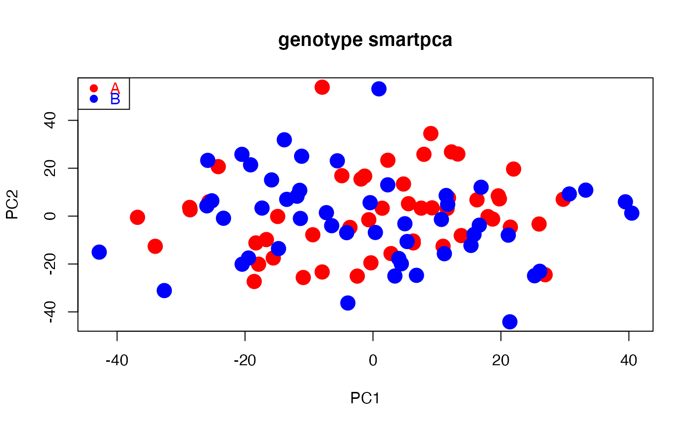

smart_mva.RdComputes Principal Component Analysis (PCA) for variable x sample genotype data, such as Single Nucleotide Polymorphisms (SNP), in combination with Permutational Multivariate Analysis of Variance (PERMANOVA) and Permutational Multivariate Analysis of Dispersion (PERMDISP).
A wrapper of functions smart_pca, smart_permanova and smart_permdisp.
Genetic markers such as SNPs can be scaled by centering, z-scores and genetic drift-based dispersion.
The latter follows the SMARTPCA implementation of Patterson, Price and Reich (2006).
Optimized to run fast computation for big datasets.
| snp_data | snp_data |
|---|---|
| packed_data | Logical value for |
| sample_group | Character or numeric vector assigning samples to groups. Coerced to factor. |
| sample_remove | Logical |
| snp_remove | Logical |
| pca | Logical indicating if PCA is computed.
Default |
| permanova | Logical indicating if PERMANOVA is computed.
Default |
| permdisp | Logical indicating if PERMDISP is computed.
Default |
| missing_value | Number |
| missing_impute | String handling missing values.
Default |
| scaling | String. Default |
| program_svd | String indicating R package computing single value decomposition (SVD).
Default |
| sample_project | Numeric vector indicating column numbers (ancient samples) projected onto (modern) PCA space.
Default |
| pc_project | Numeric vector indicating the ranks of the PCA axes ancient samples are projected onto. Default |
| sample_distance | Type of inter-sample proximity computed (distance, similarity, dissimilarity).
Default is |
| program_distance | A string value indicating R package to estimate proximities between pairs of samples.
Default |
| target_space | String.
Default |
| pc_axes | Number of PCA axes computed always starting with PCA axis 1.
Default |
| pairwise | Logical.
Default |
| pairwise_method | String specifying type of correction for multiple testing.
Default |
| permutation_n | Number of permutations resulting in PERMANOVA/PERMDISP test p value.
Default |
| permutation_seed | Number fixing random generator of permutations.
Default |
| dispersion_type | String indicating quantification of group dispersion whether relative to spatial |
| samplesize_bias | Logical. |
Returns a list containing the following elements:
pca.snp_loadingsDataframe of principal coefficients of SNPs. One set of coefficients per PCA axis computed.
pca.eigenvaluesDataframe of eigenvalues, variance and cumulative variance explained. One eigenvalue per PCA axis computed.
pca_sample_coordinatesDataframe showing PCA sample summary. Column Group assigns samples to groups. Column Class specifies if samples "Removed" from PCA or "Projected" onto PCA space. Sequence of additional columns shows principal components (coordinates) of samples in PCA space (1 column per PCA computed named PC1, PC2, ...).
test_samplesDataframe showing test sample summary.
Column Group assigns samples to tested groups.
Column Class specifies if samples were used in, or removed from, testing (PERMANOVA and/or PERMDISP).
Column Sample_dispersion shows dispersion of individual samples relative to spatial "median" or "centroid" used in PERMDISP.
permanova.global_testList showing PERMANOVA table with degrees of freedom, sum of squares, mean sum of squares, F statistic, variance explained (R2) and p value.
permanova.pairwise_testList showing PERMANOVA table with F statistic, variance explained (R2), p value and corrected p value per pair of groups.
permdisp.global_testList showing PERMDISP table with degrees of freedoms, sum of squares, mean sum of squares, F statistic and p value.
permdisp.pairwise_testList showing PERMDISP table with F statistic, p value and corrected p value per pair of groups.
Obtained only if pairwise = TRUE.
permdisp.biasString indicating if PERMDISP dispersion corrected for number of samples per group.
permdisp.group_locationDataframe showing coordinates of spatial "median" or "centroid" per group in PERMDISP.
test.pairwise_correctionString indicating type of correction for multiple testing in PERMANOVA and/or PERMDISP.
test.permutation_numberNumber of permutations applied to obtain the distribution of F statistic of PERMANOVA and/or PERMDISP.
test.permutation_seedNumber fixing random generator of permutations of PERMANOVA and/or PERMDISP for reproducibility of results.
See details in other functions for conceptualization of PCA (smart_pca) (Hotelling 1993), SMARTPCA (Patterson, Price and Reich 2006), PERMANOVA (smart_permanova) (Anderson 2001) and PERMDISP (smart_permdisp (Anderson 2006), types of scaling, ancient projection, and correction for multiple testing.
Users can compute any combination of the three analyses by assigning TRUE or FALSE to pca and/or permanova and/or permdisp.
PERMANOVA and PERMDISP exclude samples (columns) specified in either sample_remove or sample_project.
Projected samples are not used for testing as their PCA coordinates are derived from, and therefore depend on, the coordinates of non-projected samples.
Data read from working directory with SNPs as rows and samples as columns. Two alternative formats: (1) text file of SNPs by samples (file extension and column separators recognized automatically) read using fread; or (2) duet of EIGENSTRAT files (see https://reich.hms.harvard.edu/software) using vroom_fwf, including a genotype file of SNPs by samples (*.geno), and a sample file (*.ind) containing three vectors assigning individual samples to unique user-predefined groups (populations), sexes (or other user-defined descriptor) and alphanumeric identifiers.
For EIGENSTRAT, vector sample_group assigns samples to groups retrievable from column 3 of file *.ind.
SNPs with zero variance removed prior to SVD to optimize computation time and avoid undefined values if scaling = "sd" or "drift".
Users can select subsets of samples or SNPs by introducing a vector including column numbers for samples (sample_remove) and/or row numbers for SNPs (snp_remove) to be removed from computations.
Function stops if the final number of SNPs is 1 or 2.
EIGENSOFT was conceived for the analysis of human genes and its SMARTPCA suite so accepts 22 (autosomal) chromosomes by default.
If >22 chromosomes are provided and the internal parameter numchrom is not set to the target number chromosomes of interest, SMARTPCA automatically subsets chromosomes 1 to 22.
In contrast, smart_mva accepts any number of autosomes with or without the sex chromosomes from an EIGENSTRAT file.
# Path to example genotype matrix "dataSNP" pathToGenoFile = system.file("extdata", "dataSNP", package = "smartsnp") # Assign 50 samples to each of two groups and colors my_groups <- as.factor(c(rep("A", 50), rep("B", 50))); cols = c("red", "blue") # Run PCA, PERMANOVA and PERMDISP mvaR <- smart_mva(snp_data = pathToGenoFile, sample_group = my_groups)#>#>#>#>#>#>#>#>#>#>#>#>#>#>#>#>#>#>#>#>#>#>#>#>#>#>#>#>#>#>#>#>#>#>#>#>#>#>#>#>#>#>#>#>#>#>mvaR$pca$pca.eigenvalues # extract PCA eigenvalues#> PC1 PC2 #> observed eigenvalues 321.195060 317.773982 #> variance explained 1.209482 1.196600 #> cumulative variance explained 1.209482 2.406083#> PC1 PC2 #> 1 0.0046337236 -0.002775738 #> 2 0.0018116572 0.011950491 #> 3 0.0096288656 -0.011907379 #> 4 0.0055371026 0.001682321 #> 5 -0.0046772139 0.002187803 #> 6 0.0004521752 0.002215284head(mvaR$pca$pca.sample_coordinates) # extract PCA principal components (sample position in PCA space)#> Group Class PC1 PC2 #> 1 A PCA 4.768216 13.413303 #> 2 A PCA -16.661893 -9.789570 #> 3 A PCA -25.643492 5.994816 #> 4 A PCA -2.453762 -25.043319 #> 5 A PCA 19.760752 7.214635 #> 6 A PCA -28.587658 2.656167# plot PCA plot(mvaR$pca$pca.sample_coordinates[,c("PC1","PC2")], cex = 2, pch = 19, col = cols[my_groups], main = "genotype smartpca")# Extract PERMANOVA table mvaR$test$permanova.global_test#> Df SumsOfSqs MeanSqs F.Model R2 Pr(>F) #> group 1 26183 26183 0.9858 0.00996 0.8463 #> Residuals 98 2602901 26560 0.99004 #> Total 99 2629084 1.00000# Extract PERMDISP table mvaR$test$permdisp.global_test # extract PERMDISP table#> Df Sum Sq Mean Sq F Pr(>F) #> Groups 1 1.214908 1.2149079 3.387661 0.0705 #> Residuals 98 35.145482 0.3586274 NA NA# Extract sample summary and dispersion of individual samples used in PERMDISP mvaR$test$test_samples#> Group Class Sample_dispersion #> 1 A PERMANOVA/PERMDISP 161.4757 #> 2 A PERMANOVA/PERMDISP 160.9709 #> 3 A PERMANOVA/PERMDISP 161.2118 #> 4 A PERMANOVA/PERMDISP 160.3491 #> 5 A PERMANOVA/PERMDISP 160.4445 #> 6 A PERMANOVA/PERMDISP 162.2998 #> 7 A PERMANOVA/PERMDISP 160.9662 #> 8 A PERMANOVA/PERMDISP 160.9234 #> 9 A PERMANOVA/PERMDISP 161.4040 #> 10 A PERMANOVA/PERMDISP 161.1902 #> 11 A PERMANOVA/PERMDISP 160.2838 #> 12 A PERMANOVA/PERMDISP 161.0910 #> 13 A PERMANOVA/PERMDISP 160.0616 #> 14 A PERMANOVA/PERMDISP 161.9953 #> 15 A PERMANOVA/PERMDISP 161.5489 #> 16 A PERMANOVA/PERMDISP 160.8466 #> 17 A PERMANOVA/PERMDISP 162.0203 #> 18 A PERMANOVA/PERMDISP 161.0723 #> 19 A PERMANOVA/PERMDISP 160.9892 #> 20 A PERMANOVA/PERMDISP 161.2393 #> 21 A PERMANOVA/PERMDISP 160.8561 #> 22 A PERMANOVA/PERMDISP 160.8314 #> 23 A PERMANOVA/PERMDISP 162.2363 #> 24 A PERMANOVA/PERMDISP 160.9487 #> 25 A PERMANOVA/PERMDISP 161.7043 #> 26 A PERMANOVA/PERMDISP 160.0128 #> 27 A PERMANOVA/PERMDISP 161.8192 #> 28 A PERMANOVA/PERMDISP 160.7234 #> 29 A PERMANOVA/PERMDISP 160.9490 #> 30 A PERMANOVA/PERMDISP 160.7225 #> 31 A PERMANOVA/PERMDISP 161.0558 #> 32 A PERMANOVA/PERMDISP 160.7245 #> 33 A PERMANOVA/PERMDISP 161.1502 #> 34 A PERMANOVA/PERMDISP 159.9254 #> 35 A PERMANOVA/PERMDISP 161.1662 #> 36 A PERMANOVA/PERMDISP 161.3988 #> 37 A PERMANOVA/PERMDISP 161.6969 #> 38 A PERMANOVA/PERMDISP 160.5360 #> 39 A PERMANOVA/PERMDISP 161.5771 #> 40 A PERMANOVA/PERMDISP 161.1907 #> 41 A PERMANOVA/PERMDISP 161.8498 #> 42 A PERMANOVA/PERMDISP 161.7793 #> 43 A PERMANOVA/PERMDISP 161.9005 #> 44 A PERMANOVA/PERMDISP 161.7850 #> 45 A PERMANOVA/PERMDISP 161.7027 #> 46 A PERMANOVA/PERMDISP 161.9930 #> 47 A PERMANOVA/PERMDISP 162.2773 #> 48 A PERMANOVA/PERMDISP 160.8876 #> 49 A PERMANOVA/PERMDISP 161.3201 #> 50 A PERMANOVA/PERMDISP 162.0835 #> 51 B PERMANOVA/PERMDISP 161.9058 #> 52 B PERMANOVA/PERMDISP 161.5106 #> 53 B PERMANOVA/PERMDISP 160.9970 #> 54 B PERMANOVA/PERMDISP 160.9550 #> 55 B PERMANOVA/PERMDISP 160.9942 #> 56 B PERMANOVA/PERMDISP 162.4287 #> 57 B PERMANOVA/PERMDISP 161.0528 #> 58 B PERMANOVA/PERMDISP 161.0653 #> 59 B PERMANOVA/PERMDISP 160.5475 #> 60 B PERMANOVA/PERMDISP 161.4787 #> 61 B PERMANOVA/PERMDISP 161.8445 #> 62 B PERMANOVA/PERMDISP 161.1317 #> 63 B PERMANOVA/PERMDISP 161.3229 #> 64 B PERMANOVA/PERMDISP 162.3351 #> 65 B PERMANOVA/PERMDISP 160.9433 #> 66 B PERMANOVA/PERMDISP 161.8845 #> 67 B PERMANOVA/PERMDISP 160.6879 #> 68 B PERMANOVA/PERMDISP 160.8744 #> 69 B PERMANOVA/PERMDISP 163.0843 #> 70 B PERMANOVA/PERMDISP 160.7723 #> 71 B PERMANOVA/PERMDISP 160.9731 #> 72 B PERMANOVA/PERMDISP 161.2441 #> 73 B PERMANOVA/PERMDISP 162.3827 #> 74 B PERMANOVA/PERMDISP 161.2757 #> 75 B PERMANOVA/PERMDISP 161.6916 #> 76 B PERMANOVA/PERMDISP 161.3637 #> 77 B PERMANOVA/PERMDISP 160.7243 #> 78 B PERMANOVA/PERMDISP 162.8925 #> 79 B PERMANOVA/PERMDISP 160.8015 #> 80 B PERMANOVA/PERMDISP 161.7590 #> 81 B PERMANOVA/PERMDISP 161.8004 #> 82 B PERMANOVA/PERMDISP 161.1778 #> 83 B PERMANOVA/PERMDISP 161.3634 #> 84 B PERMANOVA/PERMDISP 161.4223 #> 85 B PERMANOVA/PERMDISP 162.5199 #> 86 B PERMANOVA/PERMDISP 161.3039 #> 87 B PERMANOVA/PERMDISP 161.4728 #> 88 B PERMANOVA/PERMDISP 160.7768 #> 89 B PERMANOVA/PERMDISP 161.7114 #> 90 B PERMANOVA/PERMDISP 162.3565 #> 91 B PERMANOVA/PERMDISP 161.3105 #> 92 B PERMANOVA/PERMDISP 161.0042 #> 93 B PERMANOVA/PERMDISP 161.4582 #> 94 B PERMANOVA/PERMDISP 161.9629 #> 95 B PERMANOVA/PERMDISP 161.2433 #> 96 B PERMANOVA/PERMDISP 161.8619 #> 97 B PERMANOVA/PERMDISP 160.9686 #> 98 B PERMANOVA/PERMDISP 161.7675 #> 99 B PERMANOVA/PERMDISP 161.2074 #> 100 B PERMANOVA/PERMDISP 160.5961